Connect your own Gmail, Microsoft 365 or IMAP/SMTP mailboxes, warm them up, run multi-step campaigns, answer every reply in one inbox and track deals in a built-in CRM. A self-hosted alternative to Instantly that runs on your laptop or your own server, so your leads and replies never leave your database.
From mailbox to closed deal. Six steps, all in one app on your server.
This is the whole loop rightnow-ai runs for you. Each step is a page in the app.
[ 01 / 06 ]
Connect your mailboxes
Gmail, Microsoft 365 and any IMAP/SMTP host. Gmail and Google Workspace connect with your own Google OAuth client, Microsoft 365 and Outlook with your own Entra app, everything else with a host, username and app password. Logins are encrypted before they are stored.
Gmail, Microsoft 365 and IMAP/SMTP mailboxes side by side.
localhost:3000/accounts
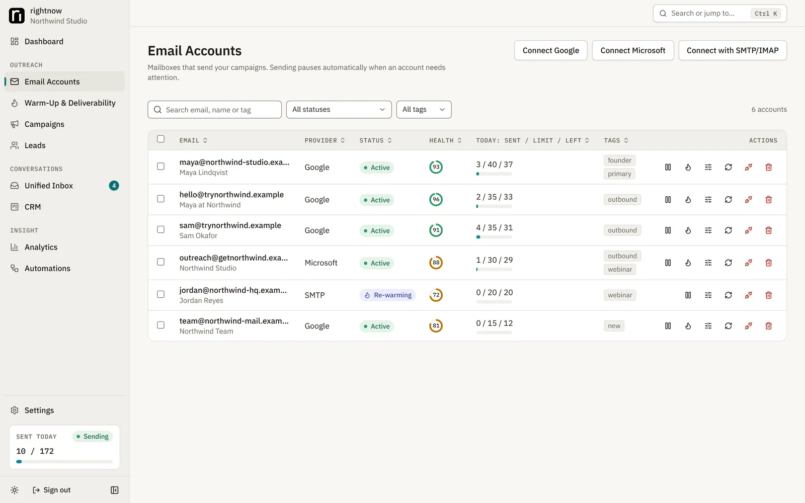
[ 02 / 06 ]
Fix your DNS
SPF, DKIM and DMARC, checked for you. The Deliverability page checks each sending domain's records, MX and spam blacklists, and tells you what to fix. A missing or broken SPF record blocks launch.
The Deliverability page tells you which DNS record to fix.
localhost:3000/deliverability
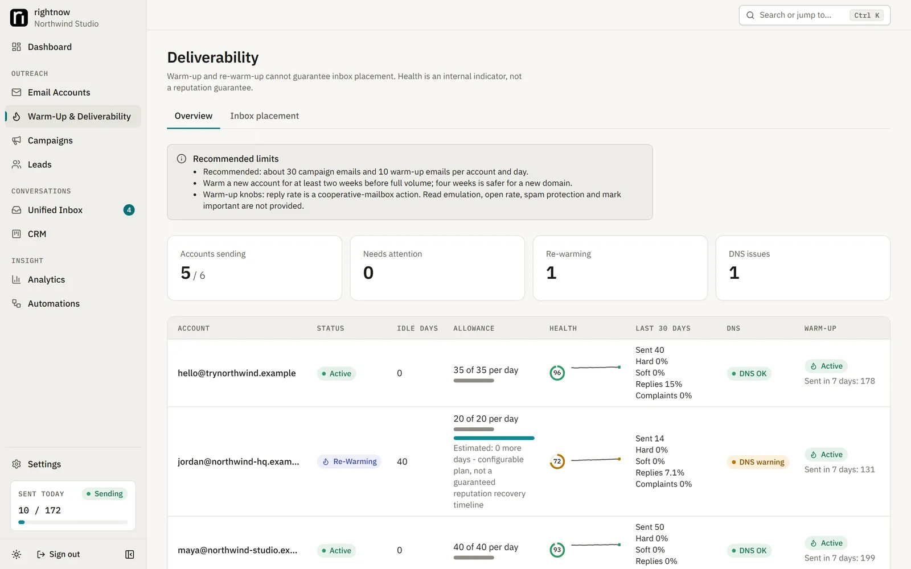
[ 03 / 06 ]
Warm up, or re-warm
Two to four weeks before real volume. Turn on warm-up per mailbox: your mailboxes send short, plainly labelled messages to each other and record whether they land in the inbox or in spam. A mailbox that sat idle for 30 days is re-warmed automatically.
Warm-up volume, inbox rate and health per mailbox.
localhost:3000/accounts
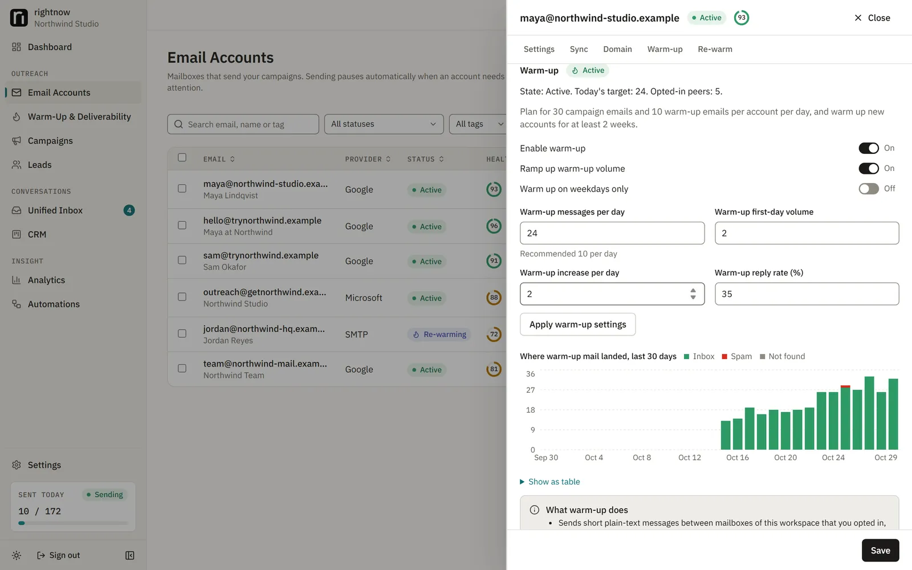
[ 04 / 06 ]
Import your leads
CSV in, duplicates out. Map your CSV's columns to names, companies and custom fields. You confirm you have the right to contact the list and record a lawful basis before the import starts. Anyone on the blocklist is never emailed.
Leads with lists, tags and custom fields.
localhost:3000/leads
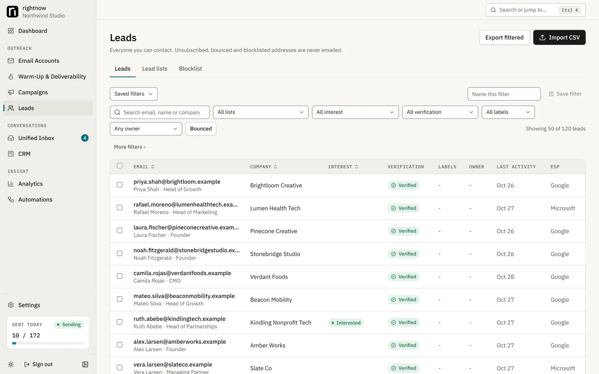
Map CSV columns; duplicates are removed.
localhost:3000/leads
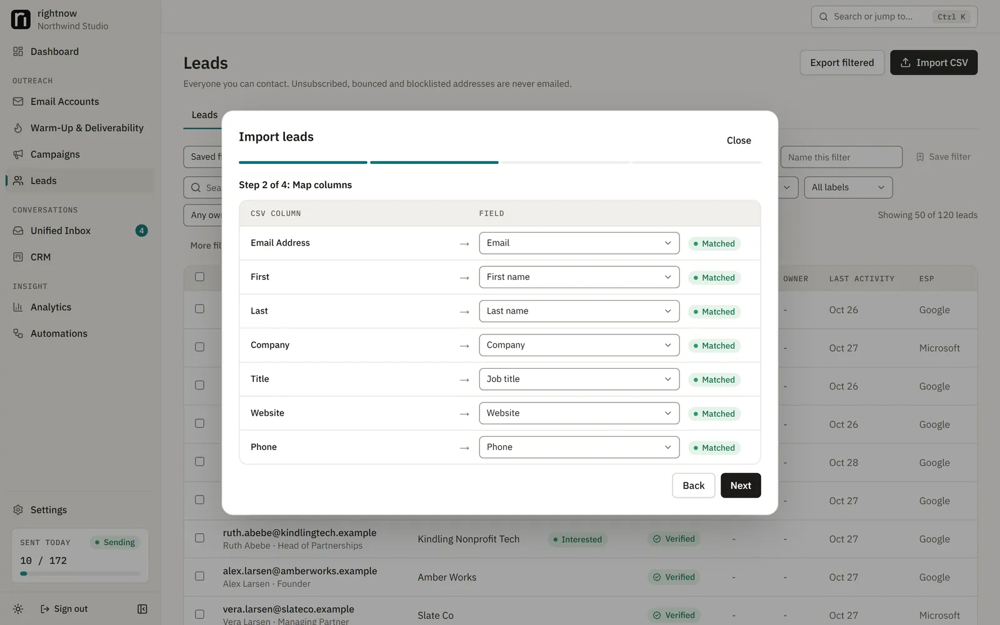
[ 05 / 06 ]
Build the campaign
Steps, delays, A/B variants and a schedule. Write step 1 and the follow-ups with merge fields like {{firstName}} and spintax like {{RANDOM | Hi | Hello}}. Set sending days and hours, the time zone, the daily limit and which mailboxes send. Send yourself a test, then launch.
Steps, delays, merge fields and A/B variants.
localhost:3000/campaigns
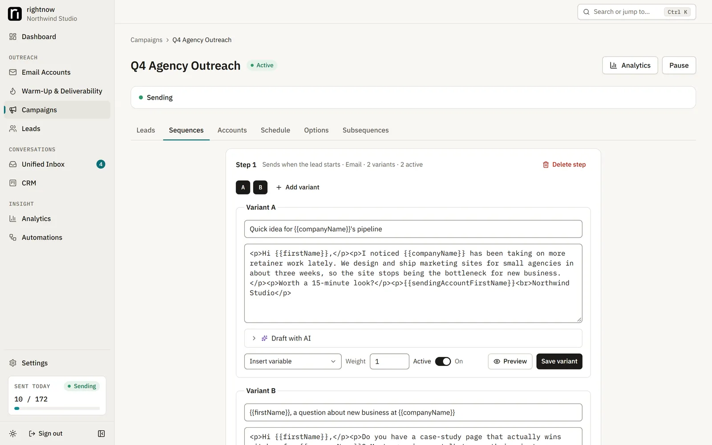
Sending days, hours and time zone per campaign.
localhost:3000/campaigns
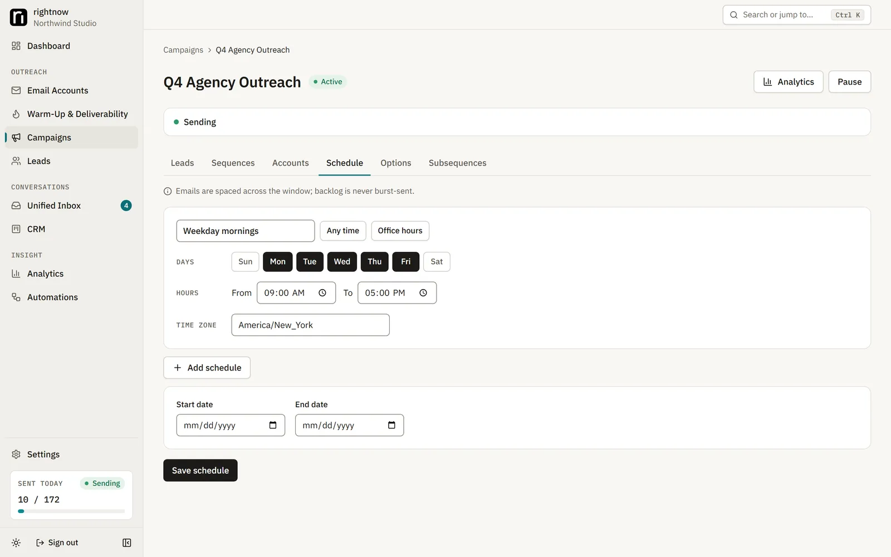
[ 06 / 06 ]
Work the replies
One inbox, a CRM, analytics and automations. Replies from every mailbox land in one threaded inbox, labelled interested, out of office, unsubscribe and more. Interested leads become deals on a Kanban board, with revenue tracked back to the campaign that found them.
Every mailbox in one threaded inbox.
localhost:3000/inbox
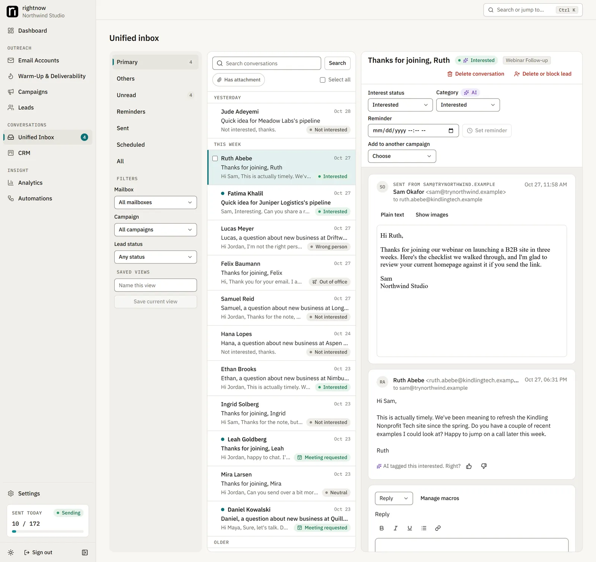
Deals on a Kanban board, revenue tied to the campaign.
localhost:3000/crm
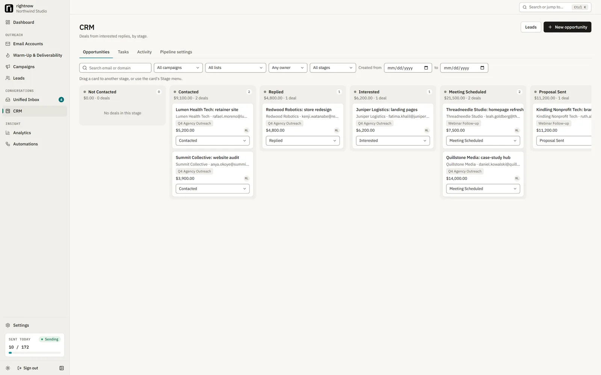
Sends, replies, bounces and revenue by campaign, step and mailbox.
localhost:3000/analytics
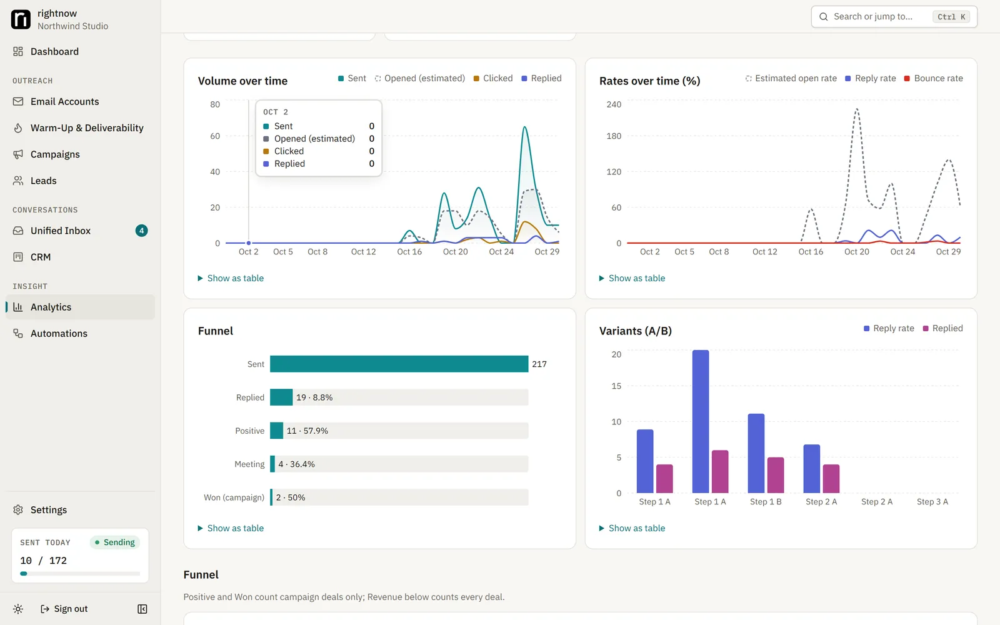
Rules like "when a lead replies interested, move it to this stage".
Follow one lead through a campaign. Pick what the lead does and watch the rules the app applies.
SAMPLE DATA
Campaign
Harbor Ops intro (sample)
Mailbox
maya@outreach-one.example
Lead
Dana Reyes · Harbor Ops · dana@harbor-ops.example
Schedule
Mon-Fri 09:00-17:00
STEP 1 · DAY 0Quick question about Harbor OpsSent 09:41
wait 3 days
STEP 2 · DAY 3Re: Quick question about Harbor OpsSent 10:12
wait 4 days
STEP 3 · DAY 7Re: Quick question about Harbor OpsCancelled
Step 1 sent: "Hi Dana," (variant A)
Step 2 sent
Reply received ("Sounds good, can you send times for next week?")
Mailbox synced → reply matched to the thread
Labelled by the rule classifier Interested
Step 3 cancelled (stop on reply)
Deal opened in CRM: stage Interested, campaign Harbor Ops intro
Automation "When a lead replies interested" can move the stage or call a webhook (lead_interested).
Outcome: deal opened, 1 step cancelled
Dana ReyesHarbor Opsfrom Harbor Ops introInterested · value —
A simulation of rightnow-ai's rules with sample data. In the app these happen on your schedule, minutes or days apart.
UNIFIED INBOX · CRM
Every reply in one inbox. The good ones become deals.
rightnow-ai labels each reply with rules first (interested, out of office, unsubscribe, automated), and you can always correct it. Below is a working copy of the idea with sample threads. It is also a small open-source CRM: deals, stages, tasks and revenue, on your own server.
6 sample threads
SAMPLE DATA
DRDana ReyesInterestedRe: Quick question about Harbor Opsvia maya@outreach-one.example · step 2 · B
TOTomás OkaforOut of officeRe: Shipping auditsvia jon@outreach-two.example · step 1 · A
PNPriya NairNot interestedRe: Front desk follow-upsvia maya@outreach-one.example · step 3 · A
SWSam WhitlockUnsubscribeRe: Studio bookingsvia ops@mail.outreach-three.example · step 2 · A
ANAuto-notifyAutomatedAutomatic reply: Kestrel Freightvia maya@outreach-one.example · step 1 · B
Replied 0
Interested 1
Dana ReyesHarbor Opsfrom Harbor Ops introvalue —
Meeting Scheduled 1
Lena FischerBrightwater Labsfrom Harbor Ops introvalue —
Proposal Sent 0
Closed Won 0
Sample threads. In the app, replies arrive through each mailbox's sync and the labels come from rules you can correct; optional AI labelling is off by default.
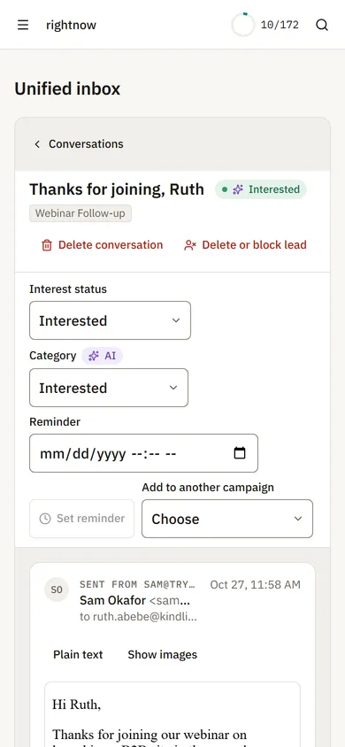
Replies from your phone.
FEATURES
Everything a cold email platform needs. On your server, with no plan to upgrade to.
Email accounts
Gmail API, Microsoft Graph and any IMAP/SMTP host. Per-mailbox daily limits, health and encrypted logins.
Warm-up and re-warm-up
Gradual ramp-up between your own mailboxes, inbox-placement tracking, and automatic re-warming after a break.
Deliverability checks
SPF, DKIM, DMARC, MX and blacklist checks, inbox placement tests, bounce monitoring and automatic slow-down.
Campaigns and sequences
Unlimited steps and delays, A/B variants, spintax, merge fields with fallbacks, schedules per time zone and mailbox rotation.
Leads
CSV import with column mapping and dedupe, lists, custom fields, tags, a blocklist and optional email verification.
Unified inbox
Every mailbox threaded in one place, with reply labels, notes, reminders and rich-text replies from the original mailbox.
CRM
A Kanban pipeline with deal values, tasks and activity history. Revenue is attributed to the campaign, step and mailbox.
Analytics
Sends, replies, bounces, clicks, opportunities and revenue by campaign, step, variant and mailbox, with CSV export. Opens are marked as estimates.
Automations
Event rules like "when a lead replies interested, move it to this stage", plus signed webhooks.
REST API
Scoped API keys for accounts, campaigns, leads, inbox and analytics.
Optional AI drafting
Bring your own OpenAI-compatible endpoint (including local models). Drafts wait for a human to approve them. Off by default.
Team and security
Invites and roles, two-factor sign-in, an audit log, rate limits, GDPR export and erasure.
RELIABLE SENDING
Built not to burn your domain. Or send the same email twice.
Sending runs on a PostgreSQL-backed queue. These rules are enforced in code and covered by tests.
Illustration of the send path. Not live data.
Limits that cannot be overshot
Each mailbox's daily allowance is reserved in the same database transaction that claims a send, so parallel workers cannot exceed it.
Fresh mailboxes only
A mailbox may send only if it synced in the last 5 minutes, so replies, bounces and unsubscribes that arrived while you were offline are seen first.
Late, never all at once
After downtime, missed sends go out inside their schedule window at the normal pace, or wait for the next window. Never as a burst.
Never resent on a guess
A send whose outcome is unknown is looked for in the Sent folder. If it isn't found twice, 15 minutes apart, it is held until you release or cancel it.
One sender per lead
Follow-ups always go from the mailbox that sent step 1. A reply, bounce or unsubscribe stops the lead's sequence.
WARM-UP
Email warm-up, open source and honest about it. It builds reputation slowly and never fakes engagement.
Built-in warm-up uses only your own mailboxes. Every mailbox with warm-up on sends short, plainly labelled messages to the others, and some of them reply. Volume starts small and grows each day, and the app records whether each message landed in the inbox or in spam. That inbox rate feeds each mailbox's health score.
It never fakes opens, rescues mail from spam or marks messages important.
One mailbox can't warm up on its own. It needs others to talk to.
It works best with several mailboxes on different domains, mixed across Gmail and Outlook.
With only a few mailboxes it builds little reputation. Treat it mainly as an inbox-placement monitor.
Want a bigger warm-up network? Connect the same mailboxes to an outside warm-up service, turn this app's warm-up off for them, and lower their daily campaign limit to leave room. Details on GitHub →
localhost:3000/accounts
Warm-up volume, inbox rate and health per mailbox.
How much can you send?
Plan it with the same defaults the app uses. Nothing here leaves your browser.
YOUR INPUTS × THE APP'S DEFAULTS
Right now: checking your clock…
90emails per sending day
3 Google Workspace mailboxes at 30 a day: 90 emails per sending day after a 2-week warm-up. 3,000 emails take about 34 sending days.
The defaults this planner uses, with their source
Constant
Value
Source
Default provider cap
Google Workspace 1500, Gmail 400, Microsoft 365 5000, Outlook.com 250, SMTP 100
accounts/factory.ts TIER_CAP
Highest daily limit per mailbox
Half the cap: 750, 200, 2500, 125, 50
factory.ts maxDailyLimit
New mailbox daily limit
30 (or the highest limit, if lower)
accounts/open-account.ts
Slow ramp-up (off by default)
2 + 2 per day since connect
schema.prisma, quota.ts effectiveAllowance
Gap between sends
540 s plus 0-300 s random (690 s on average)
schema.prisma Campaign minGapSec, randomGapSec
Default schedule
Mon-Fri 09:00-17:00
campaigns/schema.ts officeHours
Warm-up (off until enabled)
1 a day, +1 a day, up to 10; never above 50 or a tenth of the cap
deliverability/warmup-settings.ts, warmup.ts
Defaults are read from the rightnow-ai source (factory.ts, quota.ts, warmup-settings.ts). The app also applies health and re-warm limits you can't see here.
SELF-HOST
Your mailboxes. Your server. Your leads. Running in four commands.
rightnow-ai is only self-hosted. There is no rightnow account and no rightnow server: you run the same Docker Compose stack on a laptop or a Linux VPS.
Best for
Trying it, small campaigns while you work
You need
Docker Desktop and git (Windows, macOS or Linux)
Sends when
Only while the machine is awake
Tracking
Not available on localhost (unsubscribe falls back to mailto)
Upkeep
scripts/backup.sh, scripts/upgrade.sh
Best for
Always-on sending, open and click tracking
You need
A Linux VPS with Docker Engine + Compose and git; 1 vCPU / 2 GB RAM is enough to start; a domain
Sends when
Around the clock, inside your schedules
Tracking
Opens, clicks and one-click unsubscribe over HTTPS
Upkeep
Same, plus a nightly backup cron and off-server copies
cp .env.example .env# then set in .env:
MODE=local
APP_URL=http://localhost:3000
ENCRYPTION_KEY=<openssl rand -base64 32>
BETTER_AUTH_SECRET=<openssl rand -base64 32>
SETUP_TOKEN=<16+ random characters>
# Back up ENCRYPTION_KEY with your database.
03 Start · 04 Sign up
scripts/start.sh# Windows (PowerShell): scripts\start.ps1# Open http://localhost:3000/sign-up and create the owner with your SETUP_TOKEN.
Back up ENCRYPTION_KEY with your database. Your mailbox logins are encrypted with it; a backup restored without the same key cannot read them.
Self-hosting means you are the sysadmin.
Updates: scripts/upgrade.sh backs up, pulls, rebuilds, migrates and restarts.
Backups: scripts/backup.sh writes a dump. Copy it off the server, with the key stored separately.
Mailbox apps: Gmail and Microsoft need your own OAuth app. Step-by-step guides are in the repo.
Uptime: a laptop sends only while it is awake. A VPS is the always-on option.
Support: it is an open-source project. Issues and pull requests on GitHub, no SLA.
Replace <you> with your GitHub name, or use AnalyticDog13 to clone the original.
02
Fill in .env
Copy the example file and set three secrets (and, on a VPS, your domain and a database password).
bash
cp .env.example .env
03
Start it
Build and start the stack, then create the owner account with your SETUP_TOKEN.
bash
scripts/start.sh
Windows: scripts\start.ps1. Then open http://localhost:3000/sign-up.
Why there is no "Deploy to Vercel" button
rightnow-ai needs a PostgreSQL database and a background worker that runs all the time to sync mailboxes, warm up and send on schedule. Vercel runs short-lived functions and static files, so it cannot host the app. Use Docker Compose on your own machine or a VPS. This page is the only part deployed to Vercel: it is plain HTML in the repo's site/ folder.
localhost:3000/settings
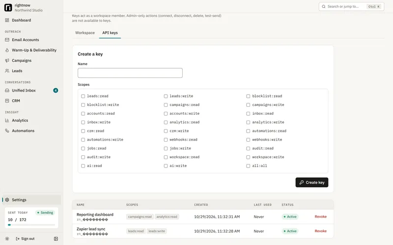
Once it runs, everything in the app is also available over a REST API with scoped keys.
COMPARE
An open-source alternative to Instantly. And to Smartlead and lemlist, if you'd rather host it yourself.
You are responsible for how you use this software. Before you email anyone you need a lawful basis to do so (for example CAN-SPAM in the US, GDPR and PECR in the EU and UK, CASL in Canada, as they apply to you and your recipients). Send only as your own, honestly identified sender.
Every campaign email carries a List-Unsubscribe header and an unsubscribe link or opt-out line, and unsubscribes are always honored: the address is suppressed and the lead's sequences stop. Your mailbox providers' terms also apply and can restrict cold email. Nothing here is legal advice.
rightnow-ai is an independent open-source project. It is not affiliated with or endorsed by Instantly, Smartlead, lemlist or any other email-outreach vendor. Product names are trademarks of their owners.
Yes. It is MIT-licensed open-source software with no paid edition, no plans and no account to create. You pay only for what you run it on (nothing extra on your own computer, or a small VPS) and for your own mailboxes and domains.
Is there a hosted version or an online demo?
No. rightnow-ai is only self-hosted and the maintainer runs no servers. To try it without real mail, set MAIL_PROVIDER_FAKE=1 in .env: every provider is replaced by a fake in-process mailbox and the whole pipeline runs without sending anything.
What do I need to run it?
Docker Desktop (or Docker Engine with Compose) and git. For always-on sending, a Linux VPS with 1 vCPU and 2 GB RAM is enough to start, plus a domain for HTTPS.
Can I deploy it on Vercel or Netlify?
Not the app. It needs PostgreSQL and a background worker that runs all the time, so it runs with Docker Compose on your machine or a VPS. Only this marketing page is a static site.
Which mailboxes can I connect?
Gmail and Google Workspace (through your own Google OAuth client), Microsoft 365 and Outlook (through your own Microsoft Entra app), and any other provider over IMAP/SMTP with an app password where required.
How does warm-up work? Does it guarantee the inbox?
Warm-up sends labelled messages between your own mailboxes, ramps volume up daily and records inbox versus spam placement. Nothing can guarantee inbox placement, and rightnow-ai never fakes opens or rescues mail from spam. For a larger network you can use an outside warm-up service alongside it.
Is it a full Instantly alternative?
It covers mailboxes, warm-up, campaigns, a unified inbox, a CRM, analytics, automations and an API. It does not include a lead database, done-for-you mailboxes, a shared warm-up network or autonomous AI agents.
Where is my data stored?
In your own PostgreSQL database. Mailbox logins and tokens are encrypted at rest with AES-256-GCM using your ENCRYPTION_KEY. There is no rightnow account and no rightnow server for your data to go to.
What happens if my laptop sleeps mid-campaign?
Nothing sends while it sleeps. On wake, each mailbox syncs first, so replies and unsubscribes that came in are seen before anything is sent; missed sends go out inside their schedule window, never as a burst. A send whose outcome is unknown is held, not resent.
Can I use it for my team?
Yes. Invite teammates with roles, protect sign-in with two-factor authentication, and review the audit log. One workspace per install today.